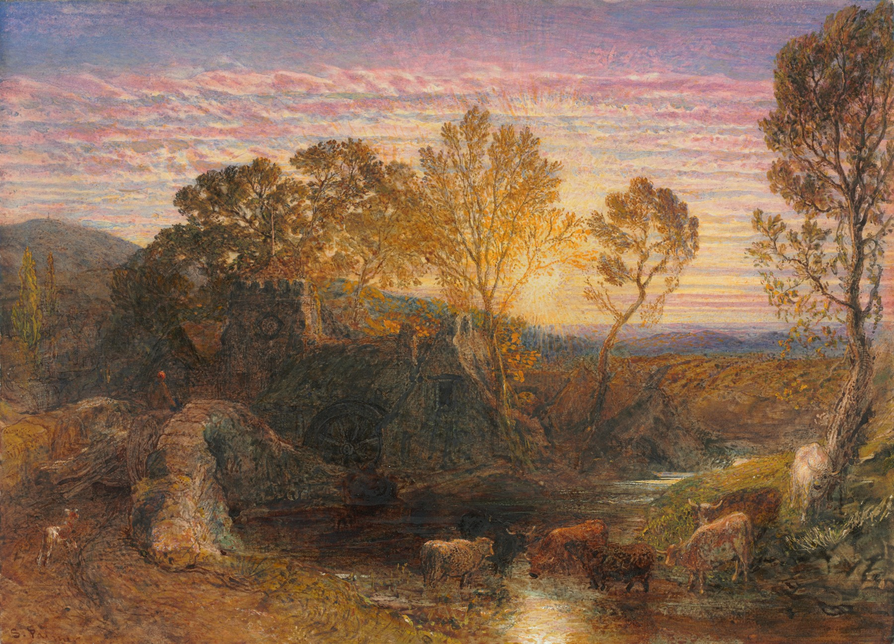
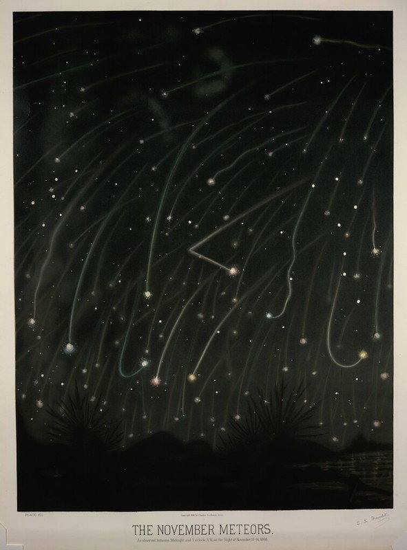

01 / ARRIVE
Cloud cover
Enter from the community portal. The title and skip link are already available. Layer two foreground cloud banks over a still landscape.
DRAFT INTERACTIVE STUDY / 28 OCTOBER 2026
Skip the sequence and read DreamNew direction: theatre, human craft, and clouds revealing the two portals
THE DREAM / A SKY THAT OPENS
Clouds part. A little sun looks through. Birds cross the opening. A traditional chapter dial turns the scene from day into night.
This is a motion and visual-language study. The clouds, celestial symbols, birds and dial are original vector placeholders; the landscape is an authentic Samuel Palmer work. Final art can combine source-faithful painted layers with more finely drawn ornaments. This is not approved website copy.
0% of the sequence
Nothing autoplays. Play once or move the slider. The 14-second study is deliberately slow for review; a website entrance should take roughly 3-4 seconds or respond to a short optional scroll.
The painting establishes a believable place. The symbolic sky gives that place a little imagination. Corbie’s precise mark and contemporary type keep the invitation clear.
Use the day/night dial as a small chapter guide: a quieter way of moving from what exists now toward what could grow. It is not a countdown, a promise of launch dates, or a literal history of the Collective. Keep today and future text explicit, independently of the image.
01 / ARRIVE
Enter from the community portal. The title and skip link are already available. Layer two foreground cloud banks over a still landscape.
02 / REVEAL
Clouds separate laterally at different depths. The sun emerges from behind them, rather than appearing as a sudden glow.
03 / RELEASE
A small flock crosses once, with slight differences in scale and timing. Preserve the real Corbie logo as a separate stationary mark.
04 / CONTINUE
The clock’s small sky aperture moves from sun to moon and stars. The landscape remains an attributed painting; the night tint is a deliberate overlay.
Recommended: a small persistent chapter dial beside Dream’s introduction and section links. Its state changes at chapter boundaries while content remains in normal document order.
Alternative: a day/night illustration in the opening only. It settles to one still state while the rest of Dream reads quietly.
Later: a real Lore timeline dial, but only with approved milestones. A full day/night cycle should not imply a fixed schedule for future community plans.
Use a coherent family of gently curled clouds, a radial sun, a crescent moon, tiny stars, fine concentric dial rings and one hand. Keep ornament sparse and material-aware. One quiet facial detail can work on the celestial symbols; do not put faces on everything. Keep body text, buttons and identity outside the decorative dial.
Borrow the reference’s sense of layered craft and tiny celestial theatre. The original watch image, branded dial design and jewellery setting are not part of the Corbie assets.

Watercolor and gouache with graphite and scraping. Cleveland Museum of Art, CC0.
Museum record / Use policy
Optional sky-texture reference, not used in the interactive scene. Chromolithograph from the 1882 atlas; NYPL source via The Public Domain Review. Archive rights checked; direct NYPL access was blocked in the preceding research.
Archive source and rights declarationBlancpain Jour Nuit reference, Watch Collecting Lifestyle. Reference only; no photograph from the article is included in this prototype.
Direction and layer handoffSource manifestEditable scene SVG